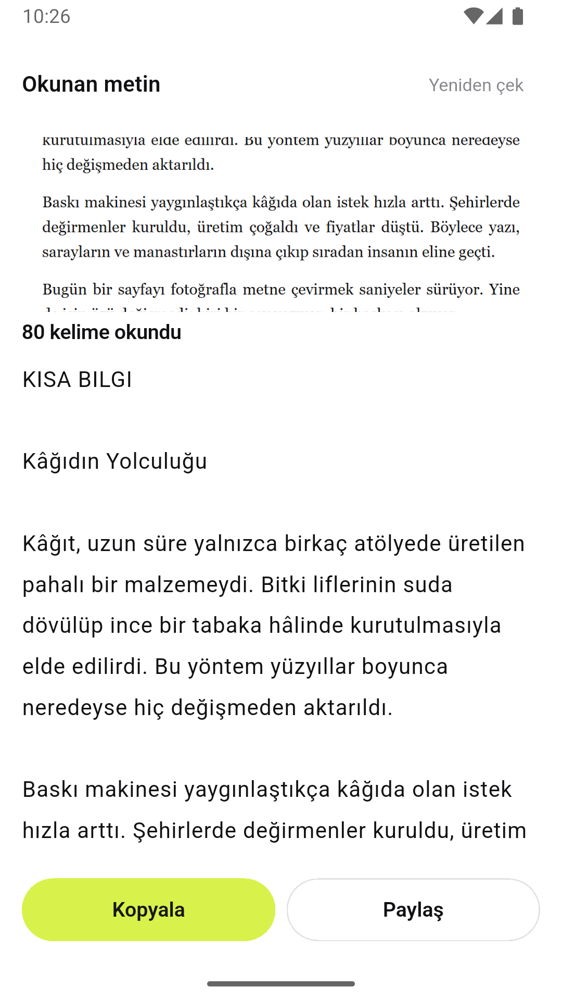
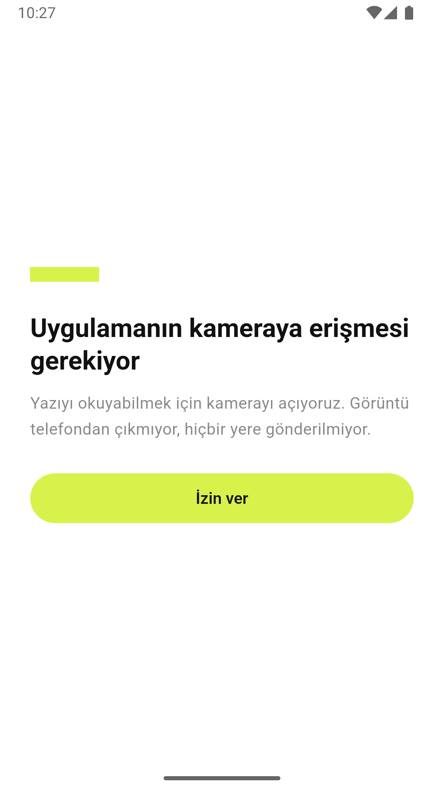

Kameranı kâğıda tutuyorsun, deklanşöre basıyorsun, kâğıttaki yazı düzenlenebilir bir
metne dönüyor. Tanıma cihazda çalışıyor: release derlemesinin tek izni
CAMERA, internet izni hiç yok.
01 — Ne yaptım
Kamerayı yazıya tutuyorsun, nişangah kadrajı gösteriyor, deklanşöre basıyorsun. Bir sonraki ekranda çektiğin kare üstte duruyor, altında okunan metin var: kaç kelime okunduğu yazıyor, metnin kendisi düzenlenebilir bir alanda. Kopyala veya Paylaş.
Kamera yerine galerideki bir fotoğrafı da verebiliyorsun; ML Kit için ikisi de sadece bir dosya yolu.


02 — Neyi bilerek yapmadım
CameraImage karesini ML Kit'in beklediği biçime çevirmek — YUV düzlemleri,
cihaz yönü, ön/arka kamera farkı — bu işin bilinen batağı. Tek kare çekmek ise
takePicture() + InputImage.fromFilePath(), iki satır. Haftayı
kare dönüşümüne harcayıp gösterilecek yeteneği hiç göstermeden bitirmek olurdu.
03 — Bu hafta gösterdiğim teknik yetenek
Seride ilk kez donanıma dokunuyorum ve ilk kez bir model çalıştırıyorum.
Kamera tarafında asıl iş yaşam döngüsü: uygulama arka plana atılınca kontrolcü bırakılıyor (başka uygulama kamerayı kullanabilsin, geri dönünce donuk kare kalmasın), öne gelince izin yeniden okunup kamera tekrar açılıyor.
İzin tarafında iki ayrı hâl var: "şimdi olmaz" ve "bir daha sorma". İkincisinde sistem diyaloğu artık hiç açılmıyor; uygulama tekrar sorarsa hiçbir şey olmaz ve kullanıcı siyah ekrana bakar. Ayrım üç değerli bir enum'a indiriliyor, kalıcı redde tek çıkış olarak "Ayarları aç" düğmesi çıkıyor.
Ham çıktı doğrudan gösterilemez. Bloklar sayfadaki sıraya göre gelmez, paragraflar satır satır kırıktır, satır sonundaki tire kelimeyi ikiye böler. Üçünü de düzelten tek bir katman var.
04 — Aldığım karar
Geçen hafta (Part 03) API anahtarını depodan nasıl uzak tuttuğumu yazmıştım ve şöyle bitmişti: anahtarı depodan gizleyebiliyorum, derlenmiş APK'dan gizleyemiyorum. Bu hafta hiç anahtar kullanmadım.
Google Cloud Vision daha iyi okur. Bir sunucuda okur.
Google Cloud Vision veya AWS Textract daha iyi okur — bunu kabul ediyorum. Karşılığında üç şey gelirdi: saklanması gereken bir anahtar, bir kota/faturalama ilişkisi, ve kullanıcının fotoğrafının bir sunucuya gitmesi. Üçüncüsü bu uygulama için tuhaf olurdu; insanlar bu uygulamaya faturasını, reçetesini, kimliğini tutacak.
ML Kit'in Latin metin modeli APK'nın içinde çalışıyor. Bedelini ölçtüm: +27 MB. Tahmin değil — paketi eklemeden önce ve ekledikten sonra debug APK alıp farkı aldım (147 → 174 MB). 27 MB, "şu fotoğraf telefondan hiç çıkmadı" cümlesinin fiyatı.
Kendi manifest'ime tek satır izin yazmıştım: CAMERA. Ama uygulamanın
gerçekten istediği izinler o dosyada değil, birleşmiş manifest'te. Ona
bakınca beş izin daha çıktı. Dördü kameraydı ve anlaşılırdı: camera
eklentisi video da kaydedebildiği için RECORD_AUDIO ve depolama izinleri
getiriyor — biz enableAudio: false ile tek kare alıyoruz, hiçbiri
gerekmiyor.
Beşincisi INTERNET'ti. Kaynağı ML Kit değil, ML Kit'in bağımlısı olan
com.google.android.datatransport: Google'ın telemetri kütüphanesi. Yani
model gerçekten cihazda çalışıyordu, ama paket yanında "kullanım verisini bize
gönderebileyim" diye bir ağ izni getiriyordu. Tam da kaçındığım şeyin küçük bir
kopyası.
Beşini de tools:node="remove" ile çıkardım. Release derlemesinin birleşmiş
manifest'inde artık sadece CAMERA var; komut README'de yazıyor, okuyan
kendi kontrol edebilir.
Aynı gözle diske de baktım ve ikinci bir açık çıktı: takePicture()
fotoğrafı uygulamanın önbelleğine yazıyor, image_picker de seçileni oraya
kopyalıyor. "Hiçbir yere kaydedilmiyor" diye yazmıştım ama her çekim diskte
birikiyordu. Sonuç ekranı kapanınca kare siliniyor artık. Silmenin tek bir sınırı var:
uygulama yalnızca kendi klasöründeki dosyaya dokunuyor, yani galeriden seçilende
silinen şey kopya, kullanıcının fotoğrafı değil.
"Ağa çıkmıyor" birleşmiş manifest'ten, "diskte kalmıyor" da dosyaları gerçekten silen bir koddan okunabiliyor olmalı. İkisini de ilk yazdığımda iddiam yanlıştı. Haftanın OCR'dan daha kalıcı parçası bu.
05 — Nasıl doğruladım
Kamerayı ve modeli test etmedim — ikisi de cihaza bağlı, orada benim kodum yok. Test
edilen yer ikisinin arasındaki dönüşüm: satırlar doğru sırayla mı birleşiyor, yan yana
iki sütun soldan sağa mı okunuyor, eko- + nomi birleşirken
Ankara- + İstanbul ve 2024- + 2025
bozulmadan duruyor mu.
Dosya silme de test edildi, ama tersinden: asıl tutulması gereken şey silmenin çalışması değil, kullanıcının galerisindeki fotoğrafı asla silememesi.
Blok sıralamasında bir testin kendisi tasarımı değiştirdi: "dikey örtüşüyorsa sola göre, yoksa yukarıya göre sırala" karşılaştırması geçişli değil, yani sonuç blokların geliş sırasına göre değişiyordu. Önce bantlara ayırıp sonra her bandı kendi içinde sıralamaya geçtim; "sıralama geliş sırasına göre değişmez" testi bunu tutuyor.
Asıl doğrulama cihazda oldu ve testlerin göremeyeceği dört şey oradan çıktı: R8'in metin tanımayı bozması, telefon yan çevrilince düzenin dağılması, 720p önizlemenin pikselli görünmesi, ve önizlemenin oranının yanlış hesaplanıp görüntüyü yatay ezmesi. Dördü de "kodun doğru olması" ile ilgili değildi — kodun dışındaki gerçekle ilgiliydi.
İzin iddiası da cihazda doğrulandı, manifest'e bakarak değil, telefonun kendi kaydına bakarak:
adb shell dumpsys package com.omergunes.metin_tarayici → requested permissions: android.permission.CAMERA
Tek satır. INTERNET yok, ve uygulama sorunsuz çalışıyor — telemetri
kütüphanesinin ağa çıkamaması bir şeyi bozmadı.
06 — Ne öğrendim
Debug derlemesinin geçmesi de yetmiyormuş. Release'de R8 durdu: ML Kit eklentisi beş
betiği de (Latin, Çince, Devanagari, Japonca, Korece) çağırabiliyor, ben yalnızca Latin
modelini almıştım, kalan dördünün sınıfları APK'da yok. Diğer modelleri eklemek her
biri için bir 27 MB daha demekti; -dontwarn ile susturdum. Debug bunu
göstermiyor çünkü R8 orada çalışmıyor.
Asıl ders bir adım sonra geldi. -dontwarn sonrası release
derlendi, "tamam" dedim. Telefona kurunca metin tanıma hiç çalışmadı:
MethodChannel#google_mlkit_text_recognizer: Failed to handle method call java.lang.NullPointerException: Attempt to invoke virtual method 'java.lang.Class java.lang.Object.getClass()' on a null object reference
-dontwarn uyarıyı susturmuş, sebebi
çözmemişti. ML Kit sınıfları yansımayla çözülüyor; R8 yansımayla ulaşılan sınıfı
kullanılmıyor sanıp atıyor, geriye null kalıyor. Derleme yeşile döndüğü için hata
çalışma anına ertelendi ve ben iki gün boyunca "release ✅" diye not almıştım. Çözüm
-keep kuralları. Bir uyarıyı susturmak onu çözmek değil.
permission_handler'ın 13.x'i Android tarafında derleme SDK 37 istiyor,
kurulumumda 36 var — 12.0.0'a sabitledim. Part 03'te
cached_network_image ile birebir aynı şey başıma gelmişti. Artık yeni paket
eklerken ilk iş boş bir projede flutter build apk denemek.
Sözlükle düzeltme denemek cazipti ama yanlış düzeltme, yanlış okumadan beterdir: kullanıcı yanlış okumayı görür, yanlış düzeltmeyi göremez. Onun yerine metni düzenlenebilir bıraktım.
Bu kararın ne kadar doğru olduğunu cihaz testi gösterdi. Temiz basılı bir sayfada model
Türkçe'yi neredeyse kusursuz okudu — Kâğıdın Yolculuğu, Şehirlerde,
yaygınlaştıkça; â ğ ı ş ç ö ü hepsi yerinde. Ama aynı metni bir
bilgisayar ekranından okuttuğumda ş harfi $ çıktı.
Yani hata modelde sabit bir kusur değil, girdi kalitesine bağlı.
Sözlükle "$ görürsem ş yaparım" deseydim, gerçek bir fiyat
listesindeki dolar işaretlerini bozardım — üstelik kullanıcı bunu fark edemezdi. Okunan
metni düzenlenebilir bırakmak, tahmin etmekten iyi.
Tireli kelime birleştirme "sonraki satır küçük harfle başlıyorsa" şartına bakıyor;
toLowerCase() ile yazsaydım I ve İ yanlış tarafa
düşerdi (Part 02'de aynısını toUpperCase() ile yaşamıştım). Harf listesini
elle yazdım.
İncele